Proyecto de apropiación social del conocimiento para la gestión ambiental comunitaria

Elaboración de compost en CANECAS GIRATORIAS
Proyecto de apropiación social del conocimiento para la gestión ambiental comunitaria
Institución Universitaria Pascual Bravo
Córdoba (España)
2026
Título de la obra:
Elaboración de compost en CANECAS GIRATORIAS
Diego Sanchez Osorno
Willian Vallejo Quintero
Sergio Ruíz Obando
Javier Mejía Sierra
Sebastian Rodriguez Rojas
Susana Pérez
Yezid Gallego Oviedo
Revisión y edición:
Juan Guillermo Rivera Berrío
Código JavaScript para el libro: Joel Espinosa Longi, IMATE, UNAM.
Recursos interactivos: DescartesJS
Fuentes: Lato y Oswald
Córdoba (España)
descartes@proyectodescartes.org
https://proyectodescartes.org
Proyecto iCartesiLibri
https://proyectodescartes.org/iCartesiLibri/index.htm
ISBN:

Esta obra está bajo una licencia Creative Commons 4.0 internacional: Reconocimiento-No Comercial-Compartir Igual.
Tabla de contenido
Presentación
"Hacer compost es lo más parecido a hacer magia".
Anónimo
Se presenta la propuesta de elaboración de COMPOST en CANECAS GIRATORIAS, como una alternativa para facilitar el proceso, para hacerlo más sencillo, más cómodo, más práctico, más rápido y más rentable, en comparación con los modelos tradicionales.
Un modelo que supera la incomodidad visual por la acumulación de residuos de los otros métodos de compostaje, de fácil manejo, de mejor control de las variables que afectan la calidad del compost, sin mayores esfuerzos físicos y sin los riesgos de contaminación por insectos y roedores.
Se propone generar conciencia ecológica y aportar a las alternativas de soluciones para superar los altos niveles de contaminación ambiental, ocasionados por los problemas de la deficiente disposición final de los residuos orgánicos, producidos en la elaboración de alimentos y los residuos de la comercialización de frutas y legumbres en diferentes grupos comunitarios.
Los residuos orgánicos en las ciudades representan casi un 50 % del volumen de residuos que se llevan a los mal llamados “rellenos sanitarios”, generando fuera de los costos de transporte, contaminación por los lixiviados generados y esparcidos durante el viaje; además, en su mayoría estos “rellenos sanitarios”se encuentran en sus etapas finales de saturación; con el agravante que ningún municipio quiere albergar este tipo de basureros.
Se requiere la integración de esfuerzos individuales y colectivos, para disminuir estos efectos negativos, en la preservación del medio ambiente y para implementar las políticas administrativas de manejo, de distribución y si es el caso, la comercialización del abono producido.
La elaboración de compost para aprovechar los residuos orgánicos, implica la articulación de sencillas acciones: inicia con la separación de los residuos orgánicos desde la fuente, se sugiere acumularlos en un tarro o en una bolsa, ojalá picados para optimizar el proceso de descomposición, se depositan en la caneca giratoria y se le da un giro. En este documento se detallan los aspectos más relevantes del proceso de compostaje en pequeña escala,en instituciones educativas, unidades residenciales y diferentes grupos comunitarios.
Existen varios proyectos exitosos del sector empresarial que producen abonos orgánicos a partir del reciclaje de residuos orgánicos; igualmente, por iniciativa de las alcaldías en varias ciudades de Colombia se han implementado planes de manejo de los residuos orgánicos; esfuerzos que requieren ser ampliados en su cobertura y ser articulados para generar una nueva cultura, tanto a nivel doméstico, como empresarial.
El mejor complemento a la elaboración de compost es el montaje del lombricultivo (con lombrices rojas californianas), explotación comercialmente sostenible, por su rentabilidad y alta productividad; entre otras por las siguientes razones: la longevidad, prolificidad y productividad de las lombrices, la cantidad y calidad del humus de lombriz producida, la variedad y rentabilidad de los subproductos (lixiviado, harina de carne de lombriz y el propio pie de cría).
Además, es altamente productivo por los beneficios que genera en el mejoramiento de las condiciones biológicas, físicas y químicas del suelo, lo cual potencializa la absorción de los nutrientes que las plantas requieren para su desarrollo; con otra ventaja, éstas condiciones se mantienen por más largo plazo, contrario al efecto residual de contaminación y degradación del suelo que ocasionan los abonos de síntesis química. Sustituir su uso, es una necesidad para mejorar la salud humana y de los animales domésticos; "comer sano", "comer orgánico" es la propuesta.
Así como en la elaboración de compost hay diferentes sistemas, explotar un lombricultivo tembién se puede hacer gradualmente y en varios sistemas, según la disponibilidad de recursos.
En otro proyecto se detallarán los procesos, métodologías, resultados y ventajas del lombricultivo.
“Datos para ilustrar la dimensión del proyecto:
Independiente de las ventajas y bondades de sustituir los abonos de síntesis química por abonos orgánicos para la salud humana y de los suelos, el reciclaje de los residuos orgánicos es una actividad rentable.
1 kilogramo de humus de lombriz se vende en el triple del valor de 1 kilogramo de compost y 1 litro del lixiviado de humus de lombriz cuesta 10 veces más.
Ponderando valores según volumen, empaque y marca del productor
Generalidades del compostaje
¿Qué es el compostaje?
Proviene de la raíz latina composta que quiere decir compuesto o poner junto: juntar varios materiales vegetales entre los cuales se desencadenan procesos de fermentación y descomposición aeróbica y anaeróbica natural, que libera nutrientes benéficos para el suelo, el resultado final es un material que sirve como abono para mejorar la fertilidad de los suelos.
Se simula el proceso natural que ocurre cuando se acumulan las ramas y hojas que caen de los árboles, bajo ciertas condiciones de humedad.
El compost es un abono orgánico de alta calidad y bajo costo, que aporta al suelo los nutrientes solubles para ser absorbidos por las plantas, es el producto de la acción de los microorganismos que descompone y degrada la materia orgánica, en un proceso aerobio (presencia de oxígeno) regulado por adecuados niveles de aireación y humedad; los
cuales determinan la temperatura (según la etapa del proceso), el pH, la ausencia de malos olores, la calidad del compost y el tiempo de duración del proceso.
El compostaje es el reciclaje de la naturaleza. Es lo que ocurre en los ecosistemas naturalmente, en un ciclo cerrado y dinámico que se auto-regula; es el proceso en el cual los residuos orgánicos son degradados biológicamente y luego transformados, primero, en sustancias orgánicas, en lo que conocemos como humus, y luego en sustancias minerales (disueltos en sales inorgánicas), sustancias que las plantas toman directamente del suelo, para su nutrición y ciclos vitales de crecimiento y reproducción.
Historia del compostaje
La elaboración de compost a partir de residuos orgánicos es una práctica tradicional desde hace muchos años; los chinos han recogido los materiales de desecho (podas) de los jardines de sus casas y de sus campos, mezclándolos con los excrementos de sus animales de pastoreo para hacer compost y aplicarlos en sus explotaciones agrícolas; en las ciudades más antiguas del mundo, como Damasco, Babilonia, Jerusalén, entre otras, disponían lugares especiales para la recolección de las basuras, con algunos residuos
hacían compost
y los otros los incineraban.
En Europa debido a la gran cantidad de basura que se acumulaba en las ciudades, se inició en el año 1925, el proceso de descomponerlas a gran escala, empleando el método Indú-lndore; nombre dado en honor al investigador Inglés Sir Albert Howard por sus estudios realizados en la India, (Indore por el nombre de la granja experimental), experimentos consistentes en mezclar restos vegetales con estiércol de los animales.
En Colombia de forma artesanal, algunos agricultores aprovechan los residuos de cosecha para transformarlos en abono orgánico; no es una práctica generalizada, a pesar de sus bondades, dado que debe planear con anticipación la producción del abono y su aplicación.
Afortunadamente se ha incrementado el número de empresas que ofrecen el servicio de manejo integral de los residuos orgánicos, elaboran compost como fuente de alimento para producir y comercializar humus de lombriz y el lixiviado.
Objetivos de realizar el compostaje
- Aprovechar al máximo los residuos orgánicos para disminuir su traslado a los rellenos sanitarios.
- Transformar los residuos orgánicos en abono orgánico, que mejoran la calidad de los suelos, pues, se incrementa la actividad de los microorganismos que “solubilizan” los nutrientes para las plantas, en sustitución de productos de síntesis química y a menores costos.
- Se hace con desperdicios de cocina y residuos de cosecha, por lo que es más económico su proceso.
- Contribuye a la preservación del entorno ambiental al utilizar los residuos orgánicos.
Ventajas de hacer y usar el compostaje
Con la elaboración de compost a partir de los residuos orgánicos se evita que se consideren como basura, se reducen sus volúmenes y por ende, se disminuyen los costos por traslados a los sitios de disposición final; o que se quemen, disminuyendo la generación de gases contaminantes, una de las causas principales del cambio climático.
Igual ocurre con el lombricultivo, existen varios métodos de explotación, dependiendo del compost producido, del espacio, de los recursos y la disponibildad de tiempo para atender su agronegocio.
¿Por qué implementar el compostaje?
El compost ayuda a mejorar las propiedades del suelo: Propiedades físicas (agregación, porosidad, retención de humedad), Propiedades químicas(pH, materia orgánica, nutrientes, solubilidad) y Propiedades biológicas (interacción con los microorganismos y los nutrientes), lo cual genera:
- Incremento de la Capacidad de Intercambio Catiónico CIC. Un mayor contenido de materia orgánica facilita la retención de nutrientes, reduce la lixiviación o pérdida de éstos e incrementa la absorción de los minerales presentes.
- Un mayor contenido de materia orgánica mejora la estructura edáfica del suelo y la formación de agregados, que incrementan la aireación (mayor volumen de oxígeno) y la capacidad de regular los niveles de humedad.
- Convierte residuos que pueden ser contaminantes en abono orgánico.
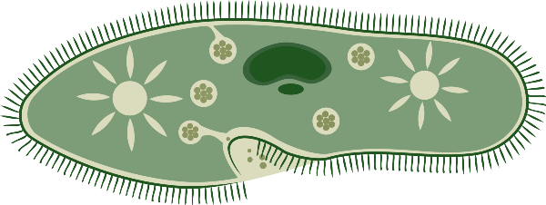
Aporte de microorganismos benéficos para las plantas, que degradan y descomponen la materia orgánica, actúan como fijadores del nitrógeno, solubilizan los nutrientes y antagonizan con otros microorganismos patógenos.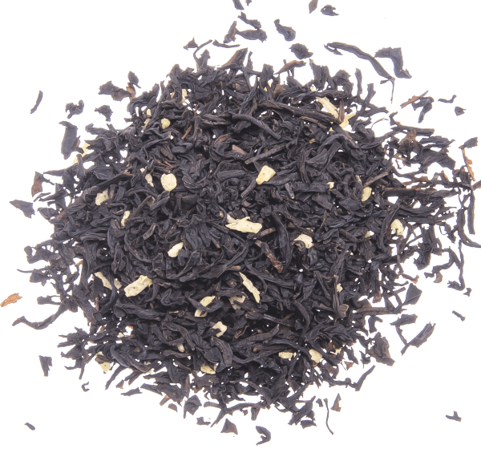
Abono orgánico quemejora, enmienda y generalas condiciones físico-químicas y biológicas, para que los nutrientes presentes en el suelo, sean más solubles y más digestibles para ser absorbidos por las plantas.- Aporte al suelo de los macro y micronutrientes en las cantidades y proporciones que requieren las plantas, según su variedad.

Es una propuesta de " cambio de mentalidad", es reconocer que los residuos orgánicos NO SON BASURA y se deben COMPOSTAR.
¿Modelo de caneca giratoria para elaborar compost.
El Proyecto de apropiación social del conocimiento para la gestión ambiental comunitaria, propuesto en la Institución Universitaria Pascual Bravo de Medellín, plantea la elaboración de compost a partir del reciclaje de residuos orgánicos, en un modelo de caneca giratoria, para ser aplicado en diversas comunidades, como Instituciones Educativas, Conjuntos Residenciales, Acciones Comunales y otros grupos comunitarios.
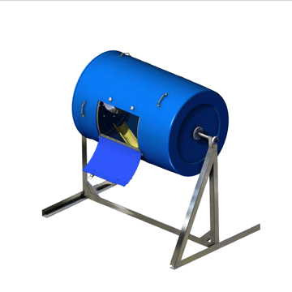
Este sistema de caneca giratoria para elaborar compost se calcula para volúmenes de entre 150 y 175 kilogramos de residuos orgánicos, calculado para un periodo de tiempo entre 6 y 8 semanas; tiempo que se proyecta disminuir mediante la aplicación de aditivos que aceleran el proceso del compost.
Plano del ensamblaje de la caneca giratoria

En los casos de disponer de mayores volúmenes de residuos orgánicos se pueden agregar otras canecas, incluso se pueden conectar a una serie de mecanismos de tracción, para facilitar el giro de las canecas. La caneca giratoria tiene los siguientes acondicionamientos:
• Una ventana con seguro, para el ingreso de los residuos orgánicos y la extracción del compost elaborado.
• Dos medios tubos internos de pvc colocados a lo largo de la caneca. diametralmente opuestos y en forma biconvexa (para homogenizar la mezcla).
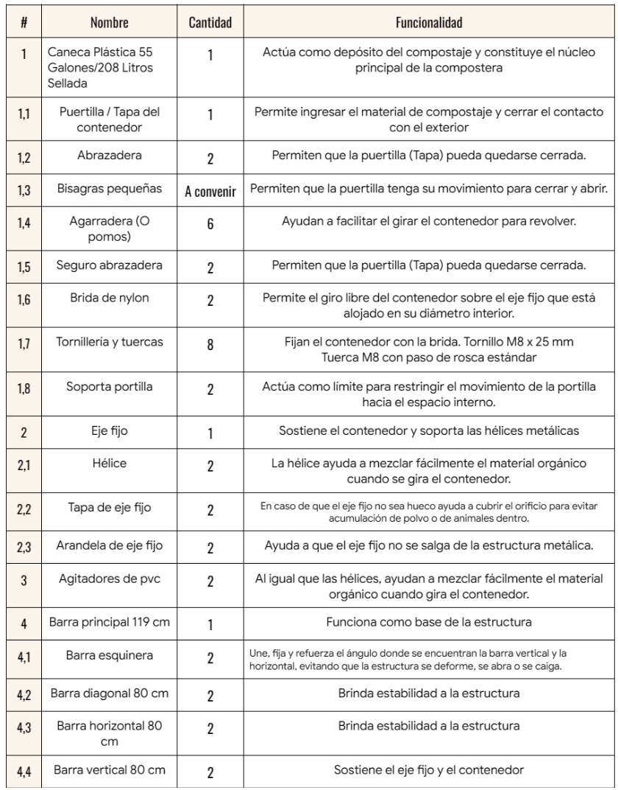
• Con este mismo objetivo, la instalación de 16 tornillos de 4 o 5 pulgadas de largo x 5/32 de pulgada de grueso, asegurados con tuerca y arandela, para contribuir a romper las superficies de los residuos al girar la caneca.
• Un tubo de sujeción que atraviesa la caneca, soportadas en sendos rodachines para permitir el giro de la caneca, con un par de hélices en acero inoxidable (de 2 pulgadas de ancho) que facilita la homogenización de los residuos.
• El tubo interno está soportado en una estructura, tipo H, ajustable que facilitan el giro de la caneca, con un trinquete para asegurar la posición de la caneca, a una altura que facilite el ingreso de los residuos y la extracción del compost elaborado.
• Maniguetas o pomos colocados simétricamente para facilitar el giro manual de la caneca.
• Una llave plástica colocada en la base de la caneca, para la recolección del lixiviado.
• De 12 a 16 agujeros de ¼ de pulgada para la aireación del compost, en las dos caras laterales de la caneca.
• Sensor (Soil tester) portatil para monitoreo de ocho (8) parametros
| Temperatura | Humedad | EC (Conductividad) | pH |
| Nitrogeno | Potasio | Fosforo | Fertilidad |
regular con giros a la caneca o la adición de algún tipo de residuos que corrija los excesos de humedad y/o temperatura.
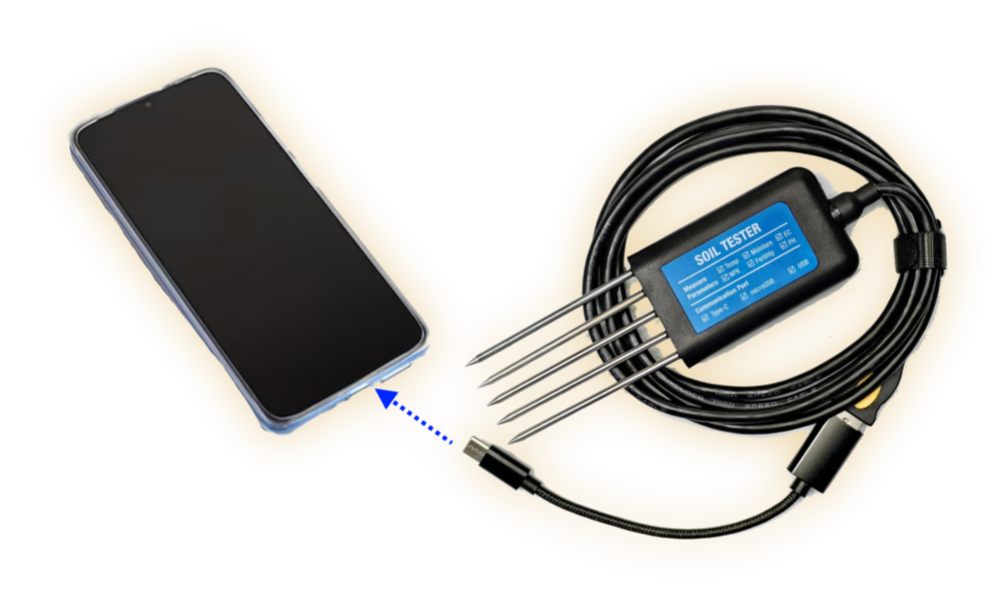
Esta propuesta de elaborar compost en una caneca giratoria se plantea como una alternativa para facilitar el proceso, para motivar a un mayor número de personas a disponer adecuadamente los residuos orgánicos, para contribuir a generar una cultura de preservación del medio ambiente y a su vez, superar algunas dificultades de los métodos tradicionales de compostaje. Entre otras, se destacan las siguientes ventajas de este modelo de canecas giratorias:
- Facilita el volteo de la materia orgánica, pues, a medida que aumenta el volumen se hace más pesado. Girar la caneca es más fácil.
- Acelera el proceso de descomposición de los residuos orgánicos por una mayor homogenización de la mezcla y el mantenimiento de los rangos ideales de temperatura, según la fase del proceso.
- Evita los riesgos de contaminación por presencia de cucarachas y roedores de los tradicionales métodos de compostaje.
.png)
Has click en la portada para acceder al manual de fabricación y ensamble
Materia orgánica del suelo
Está constituida por distintos tipos de residuos orgánicos (de origen vegetal o animal) que se descomponen por la acción de los microorganismos, en condiciones adecuadas de pH, aireación y humedad, y luego, son incorporados al suelo; por ello, previamente se deben conocer las características edafológicas de los suelos a utilizar y como mejorarlos, mediante el empleo del abono orgánico resultado de los procesos de compostaje y lombricultivo.
Identificar la calidad de la materia orgánica de los suelos a cultivar, es uno de los factores más importantes para determinar su productividad, conjuntamente con las características propias de las especies a cultivar; si bien en las regiones tropicales, donde las temperaturas elevadas y la alta humedad, aceleran los procesos, en las zonas templadas también se puede mejorar la calidad de los suelos, en un proceso un poco más lento.
El equilibrio dinámico de sus componentes le da vida al suelo, porque sirve de alimento a todos los organismos que viven en él, particularmente a los micro-organismos que realizan el proceso de descomposición de los residuos orgánicos, en beneficio de la calidad de los suelos.
Con buenos suelos se obtienen buenas cosechas; un buen suelo debe tener los nutrientes “disponibles” para el crecimiento de las plantas, y una estructura que facilite su desarrollo radicular; esta estructura debe tener suficiente porosidad (aire y humedad) para que las raíces de las plantas absorban los nutrientes; además, se deben evitar encharcamientos que pudren las raíces, se logra mediante adecuados sistemas de drenaje.
Se considera un “buen suelo”, un suelo fértil, cuando contiene los 17 elementos esenciales para el desarrollo de las plantas.
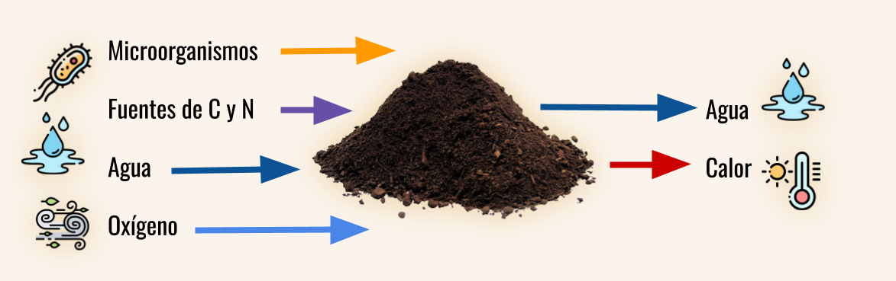
Las ventajas comparativas del empleo del abono orgánico frente al tradicional abono química sobresalen por el mejoramiento de las condiciones físico-químicas y biológicas del suelo, que generan las condiciones óptimas para la absorción de los nutrientes presentes en el suelo; condiciones que se mantienen por más largo plazo; contrario al efecto residual de contaminación y degradación del suelo que ocasionan los abonos de síntesis química.
Fuentes de materia orgánica
Residuos de la preparación de los alimentos (incluye cáscaras de huevo y las canastas desechables, ojalá trituradas), restos de comida, tanto caseros, como de restaurantes y los residuos de la comercialización de frutas y legumbres.
Residuos que deben ser separados retirando desechables de un solo uso, bolsas plásticas, colillas de cigarrillos, pañales desechables, toallas higiénicas, vidrios, objetos metálicos y residuos tóxicos y/o peligrosos.
Se consideran igualmente otros tipos de residuos:
- Residuos de la actividad de producción pecuaria: estiércoles, orines y plumas.
- Residuos de las actividades agrícola y forestal: restos de cultivos, residuos postcosecha, podas de árboles y arbustos, aserrín, hojas y ramas, etc.
Descomposición de la Materia orgánica a partir de residuos orgánicos
Humificación: Producto de la integración de los procesos físicos, químicos y biológicos que descomponen los residuos orgánicos.Humus: Producto de la descomposición de los residuos orgánicos. Compuesto de tipo coloidal que contiene los nutrientes (quelatos ligno-protéicos y minerales) solubles para ser absorbidos por las plantas, en equilibrio dinámico de sus componentes (proporciones ideales) para una mayor productividad.
Mineralización: Es la transformación del humus en compuestos solubles (iones nitratos, sulfatos y fosfatos), ácidos húmicos y fúlvicos asimilables por las plantas.
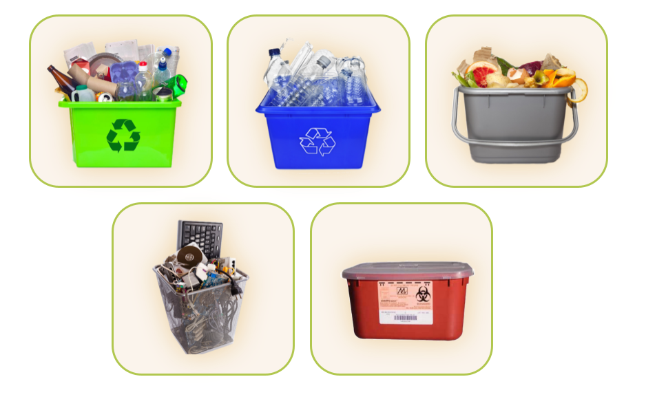
Haz clic en la siguiente imagen, para abrir un juego de clasificación de residuos.
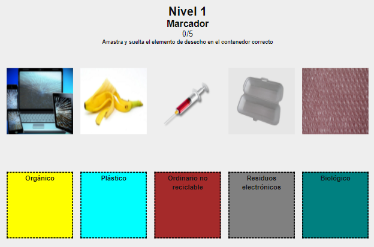
Variables en los procesos de compostaje
La CALIDAD y el TIEMPO de elaboración del compost dependen del adecuado manejo de dos tipos de variables: 1° el equilibrio dinámico entre los tipos de residuos orgánicos. 2° El manejo de las cuatro variables de control.
1. Variables referidas a la naturaleza y características de los residuos orgánicos:
● Para un proceso de compostaje eficiente y estable se requiere un equilibrio dinámico entre los tipos de residuos, los residuos ricos en nitrógeno, y los residuos ricos en energía,
● Este equilibrio se da en términos de la relación Carbono/Nitrógeno: (C/N), esta relación es variable, ideal entre 25 y 30 partes de residuos ricos en carbono por 1 parte de nitrógeno: 25-30/1 y depende de los tipos de residuos.
● El tamaño de las partículas es un factor clave, entre más pequeñas, más efectiva será la acción de descomposición de los microorganismos.
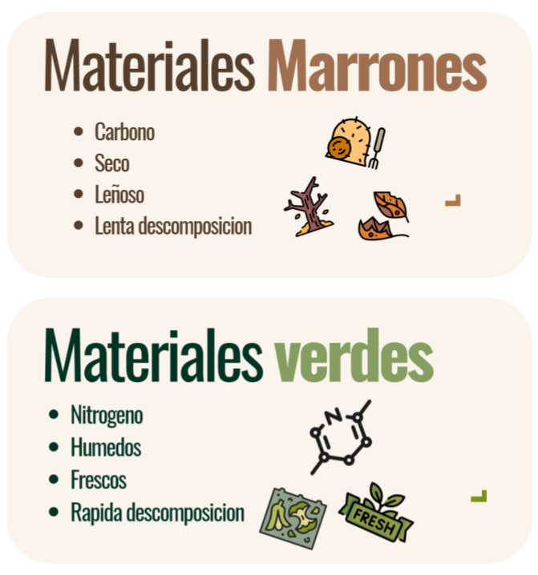
Los residuos ricos en nitrógeno, llamados también MATERIALES VERDES o HÚMEDOS tienen como función principal acelerar el proceso de descomposición y se caracterizan por ser frescos, húmedos y de rápida descomposición, los más utilizados son:
● Restos y cáscaras de frutas y verduras.
● Restos de vinos, cervezas, café, chocolate, yogur y jugos de frutas.
● Cáscaras de huevo trituradas.
● Ripio o residuos de café.
● Césped recién cortado y poda de jardín.
● Restos de alimentos no procesados.
Los residuos ricos en energía, llamados también MATERIALES MARRONES o SECOS son los de mayor volumen, regulan la humedad de la mezcla y generan los espacios vacíos para la circulación del aire; además, aportan la energía para la reproducción de los microorganismos, generalmente son secos, leñosos, fibrosos y de más lenta descomposición; los más utilizados son:
● Hojas secas y ramas pequeñas (cortadas en trozos pequeños).
● Las bandejas o canastas deshechables de huevos (cortadas lo más pequeño posible).
● Papel y cartón troceados sin tinta.
● Aserrín.
En resumen, se deben depositar dos capas de material marrón por una de material verde.
2. Variables de control externo:
- Control de la temperatura,
- Control de la humedad,
- Control del pH y
- Control de los niveles de aireación, osea la disponibilidad de oxígeno.
Temperatura
La temperatura es un parámetro básico de control para lograr un compostaje de calidad, su adecuada regulación activa o detiene la actividad microbiológica de los microorganismos benéficos.
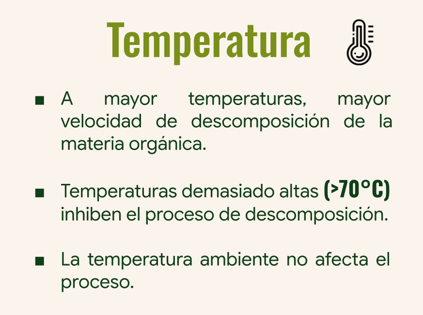
El calor generado en las pilas de compostaje se genera por la respiración de los micro-organismos. Además, sus variaciones determinan las cuatro fases de descomposición de los residuos orgánicos.
Con el aumento de la temperatura se eliminan microorganismos patógenos y se inactivan las semillas no deseables presentes en los residuos; a temperaturas más altas se incrementa la velocidad de descomposición de la materia orgánica.
La temperatura no debe superar los $70 \degree C$, si ocurre la materia orgánica se mineraliza, se pierden nutrientes y se alteran los otros parámetros; por ello, cuando no se aumente la temperatura se debe girar la caneca y/o agregar más residuos orgánicos; y si se eleva demasiado se debe regar y girar la caneca.
Al tomar el registro de la temperatura, si el calor es tolerable (de $15\degree$ a $40\degree C$.), se infiere que la mezcla está en la fase mesófila (fase 1
de calentamiento o fase 3 de enfriamiento); si el calor que se percibe es intolerable, la mezcla puede estar en la fase termofíla.
Humedad
Entre el 45 y el 60% es el rango ideal de humedad en el compost, para lograr mayor eficiencia de los microorganismos presentes, en sus funciones metabólicas en el proceso de degradación de los residuos orgánicos.
La “prueba del puño” es utilizada comúnmente para verificar de forma cualitativa el porcentaje de humedad en una pila de compost.
Haz clic en la siguiente imagen, para apreciar mejor la prueba del puño:
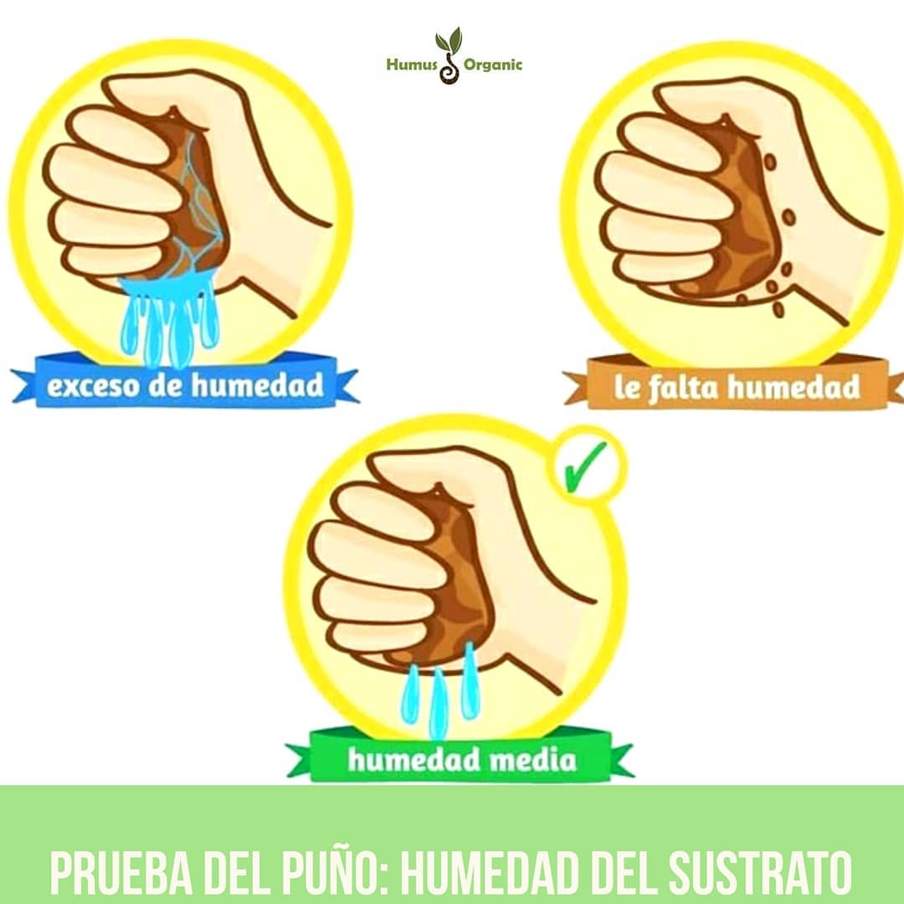
“si éste es normal, se puede formar una bola con el material sin que se fragmente o se desmorone”.
Si está muy húmedo, chorrea; se debe agregar material seco (aserrín, hojarasca, residuos de cocina y de podas), y si por el contario la mezcla está seca, se puede agregar residuos crudos de cocina o regar con agua.
El riego debe realizarse por aspersión, nunca a chorro; debe ser preferiblemente agua lluvia, debido a que el agua potable tiene altos contenidos de cloro que afecta a los microorganismos, (en este caso se debe dejar reposar el agua un día).
Para mayor exactitud se emplean los higrómetros, sensores de humedad de alta precisión.
El lixiviado recogido puede aplicarse de nuevo a la mezcla.
Aireación
El suministro continuo y uniforme de oxígeno mediante el giro de la caneca, potencia los procesos metabólicos de los micro-organismos, osea, acelera la de degradación de la materia orgánica.
El nivel de oxígeno debe estar entre el 5% y 10%; en rangos menores se generan pérdidas de Nitrógeno y se retrasa la maduración del compost.
Igualmente, al subir la temperatura en la caneca, se incrementa el consumo de oxígeno por parte de los microorganismos, esta situación se controla con giros de la caneca más continuos.
pH.
El nivel de pH indica si un material es neutro, igual a 7.0, ácido si es menor y básico si es mayor; este rango controla la actividad biológica de los microorganismos en la descomposición de la materia orgánica, por ejemplo, las bacterias evolucionan mejor en rangos entre 6.0 y 7.5, mientras los hongos se desarrollan mejor en rangos entre 5.5 y 6.0.
La variedad de los residuos orgánicos a compostar garantiza el pH de la mezcla, asociado a los rangos ideales de temperatura, aireación y humedad.
Fases del compostaje
1. Descomposición mesófila, de calentamiento: Al inicio del proceso de compostaje, con un adecuado porcentaje de humedad, la temperatura en la pila comienza a aumentar hasta los $40\degree$; durante esta fase aparecen dos grupos de bacterias bacillus y thermus, que degradan los azúcares y los aminoácidos. Simultáneamente el pH baja, se torna ácido.
2. Descomposición termófila: Entre los $40\degree$ y $60\degree$ las bacterias mesófilas se agrupan formando endosporas para protegerse del calor, aparecen otras cepas de bacterias termófilas y hongos que
descomponen las partes más difíciles de la materia orgánica (celulosas, hemicelulosas y ligninas); en esta fase también mueren los microorganismos patógenos que no soportan estos aumentos de temperatura. El calor generado en el proceso de descomposición disminuye el % de humedad y el pH asciende entre 8 y 9 (se torna básico).
Por su importancia les
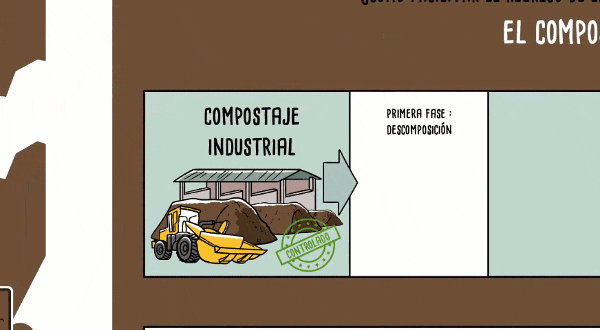
3. Descomposición mesófila de enfriamiento: Cuando se reducen los residuos ricos en carbón y nitrógeno, los microorganismos disminuyen su actividad, por lo tanto, la temperatura también desciende, cuando esto ocurre las bacterias mesófilas que estaban en forma de endosporas reactivan su trabajo de degradación; en esta etapa el pH desciende cercano al pH neutro.
4. Maduración: es la etapa final del proceso de elaboración del compost, el compost se enfría, baja la emperatura a niveles del medio ambiente; la materia orgánica se ha descompuesto casi en su totalidad, tanto que ya no lo hará más; los microorganismos, especialmente los hongos sintetizan los carbohidratos más complejos (lignina), toma un color café oscuro y tiene un olor muy agradable a bosque húmedo.
Video 1
A continuación, puedes observar la explicación que nos da Gustavo Adolfo Iguad Eraso, sobre el proceso de compostaje:
Haz clic en la esquina superior derecha para ampliar la escena
Nutrientes del compostaje
Además del Oxígeno-O, Hidrógeno-H y Carbono-C en un compost de buena calidad se encuentran 14 nutrientes minerales, que se clasifican en:
- macronutrientes primarios:
Nitrógeno-N,Fósforo-P,Potasio-K. - micronutrientes primarios:
Calcio-Ca,Magnesio-Mg yAzufre-S. - micronutrientes esenciales:
Boro-B,Cloro-Cl,Cobre-Cu,Hierro-Fe,Manganeso-Mn,Niquel-Ni,Molibdeno-Mo, yZinc-Zn. - micronutrientes no esenciales:
Sodio-Na,Silicio-Si,Cobalto-Co,Selenio-Se yAluminio-Al.

Video 2
El suministro de Nitrógeno puede tener problemas, veamos:

El mensaje es CLARO NO SEPARAR LOS RESIDUOS, los convierte en BASURA. Por ello, lo más importante es desde la fuente, CLASIFICAR Y SEPARAR los RESIDUOS ORGÁNICOS de los demás residuos para COMPOSTARLOS.
Para un eficiente proceso de compostaje, se deben SEPARAR Y DISPONER ADECUADAMENTE, en otros recipientes, NUNCA agregarlos a la CANECA GIRATORIA de compostaje, estos materiales , son entre otros, los siguientes:
- Artículos y/o envases metalicos, de vidrio o de pasta.
- Empaques de celofán y envolturas de snacks y confites.
- Empaques o embalajes de alimentos con capas de plástico y/o aluminio, ejemplo: envases tetrapack
- Maderas tratadas con productos químicos.
- Colillas de cigarrillos.
- Toallas higiénicas y pañales deshechables.
- Residuos peligrosos y/o tóxicos.
Elaboración de Compost en CANECAS GIRATORIAS
Los residuos se depositan en la CANECA GIRATORIA por capas entre 5 y 10 cms, distribuidas en forma UNIFORME y luego se GIRA.
- Una capa de hojas y ramas.
- Una capa compost o de tierra común.
- Los restos de comida, cáscaras de verduras y/o frutas. Se debe girar la caneca luego de cada depósito.
- Se siguen depositando capas de restos de jardín, de comida o de cáscaras de verduras y/o frutas. Se debe girar la caneca.
- Si se requiere, regar con agua limpia. Se debe girar la caneca.
Facilita el proceso el corte de los residuos en trozos pequeños.
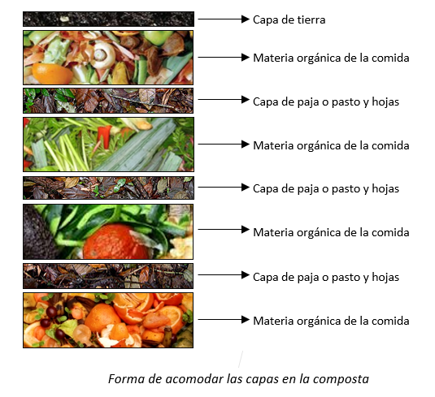
Problemas más comunes en el proceso de compostaje y sus alternativas de solución
- El compost NO se calienta: La falta de oxígeno reduce la actividad de los micro-organismos aeróbicos. Por ello, SIEMPRE Se debe girar la caneca al agregar los residuos, MÍNIMO tres veces a la semana.
- Exceso de humedad: Agregar material seco (cáscaras de frutas y legumbres). Hacer la prueba del puño.
- Composta muy seca: Agregar agua y girar la caneca. Hacer de nuevo la prueba del puño.
- Malos olores: Girar la caneca con mayor periodicidad para evitar la compactación y así mantener el equilibrio de las bacterias anaeróbicas (responsables del mal olor) con las bacterias aeróbicas, otra medida, agregar material seco.
- Control de insectos, roedores y aves: siempre mantener la ventana de acceso cerrada.
Aspectos a tener en cuenta para realizar un proyecto de elaboración de Compost
Al inicio de un proyecto de elaboración de compost se deben considerar los siguientes detalles:
- Cantidad y calidad de los residuos orgánicos disponibles.
- Disponibilidad de espacio, para depositar los residuos orgánicos, revolver el compost (giros o volteos de la caneca) y almacenar adecuadamente el compost terminado.
- Disponibilidad de tiempo para realizar oportunamente las actividades del proceso.
- Llevar los registros de los controles técnicos del proceso de compostaje.
La producción de $CO_2$ en el proceso de compostaje, es de bajo impacto; dada su fijación en el suelo. Es una de las razones de compostar los residuos orgánicos, pues, se contribuye a disminuir sus emisiones contaminantes en el aire.
Si el compost se emplea en los cultivos sin cumplir las cuatro fases, queda inmaduro , entonces, puede presentar problemas de toxicidad; el Nitrógeno presente se encuentra como amonio,en lugar de nitrito que es lo ideal. Además, se presenta inestabilidad en los ácidos orgánicos (carboxílicos y sulfónicos) que son tóxicos para las plantas.
El compost estará listo cuando:
• Parece tierra, huele a tierra, es de color marrón oscuro.
• Las partículas son de tamaño minúsculo, no reconocibles, comparado con los residuos originalmente compostados.
El compostaje es un proceso que ocurre de forma natural, generalmente entre 3 o 4 meses, lo que se propone con las CANECAS GIRATORIAS es ACELERAR y FACILITAR el proceso, la propuesta es realizarlo entre 60 y 75 días.
El compost sólo tiene cinco ingredientes: carbono, nitrógeno, agua, aire y tiempo, en un equilibrio dinámico; mezclarlos y controlarlos es un APRENDIZAJE contínuo, con la práctica, seguro, FUNCIONARÁ MEJOR.
Con esta sencilla acción, estamos contribuyendo a la disminución de los efectos contaminantes del medio ambiente; además, tendremos abono para nuestros jardines y/o cultivos.
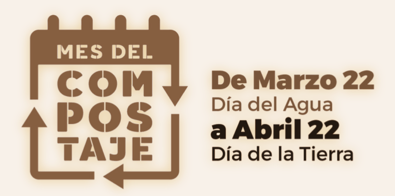
En resumen, se pueden resaltar en el siguiente mensaje los beneficios del compostaje:
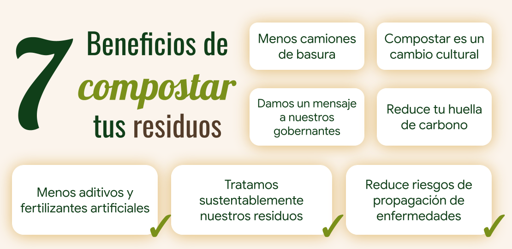
Lógicamente, el MEJOR RESIDUO es el que NO SE GENERA. Concuerda con las 3 R: Reusar, reducir y Reciclar.
Normas de seguridad
- Disponer de un botiquín de primeros auxilios, con los elementos básicos; vendas, gasas, toallas de papel, guantes de látex, desinfectantes, alcohol, bajalenguas y tablillas para inmovilización. Incluya los números telefónicos de emergencia, Policía, Bomberos y servicios de salud y transporte.
Diviértete un poco, resolviendo el siguiente puzle. Puedes buscar imágenes desde Flickr o usar las que están guardadas en local. Si lo deseas, puedes ampliar el puzle haciendo clic en el botón de la esquina superior derecha.
Lecturas complementarias
El proyecto cuenta con tres documentos guías para aprender sobre compostaje, operación de la maquina y como se ensambla, esto con el fin de complementar de una manera mas compacta los temas abordados en este libro interactivo. A la vez de un sitio web que recopila todo lo relacionado al proyecto.
.png)
Has click en las portadas para acceder a los documentos complementarios.
.png)
Has click en la portada para acceder al manual de uso de la compostera y del sensor
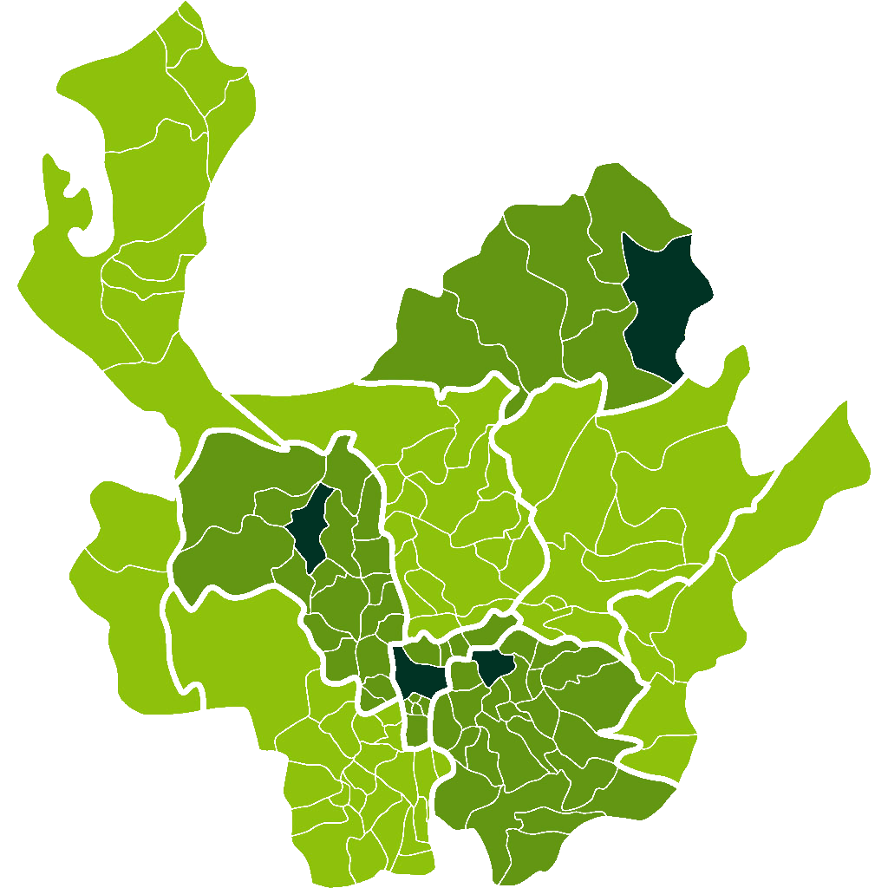
Has click en el icono para acceder a la pagina web del proyecto
Propuesta de LOMBRICULTIVO:
Para un MEJOR EMPLEO del compost se puede iniciar la explotación de un lombricultivo, es proceso rápido, de aproximadamente de 30 días adicionales, y de MAYOR RENTABILIDAD, las lombrices tienen la capacidad de convertir la materia orgánica compostada en humus de lombriz, EL MEJOR ABONO ORGÁNICO.
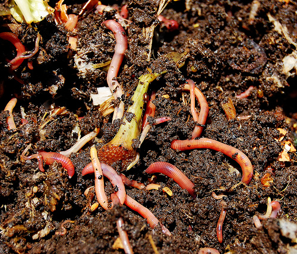
Un lombricultivo también se puede hacer gradualmente, según la disponibilidad de compost; se enriquece la mezcla con los estiércoles de los animales de pastoreo, éstos previamente se dejan secar ( una o dos semanas) y luego, se aplican también por capas; se gira la caneca en cada aplicación para homogenizar la mezcla y se debe esperar mínimo 30 días para dárselas como alimento para las lombrices.
El lombricultivo también llamado vermicultivo o vermicompost es la mejor opción para emplear el compost inmaduro , para alimentar las lombrices rojas californianas .
La mayor importancia del humus de lombriz radica en la alta carga microbiana que promueve la formación de enzimas, seudohormonas y compuestos quelados (iones de minerales), estos quelatos de los diferentes minerales facilitan su absorción por parte de las plantas.
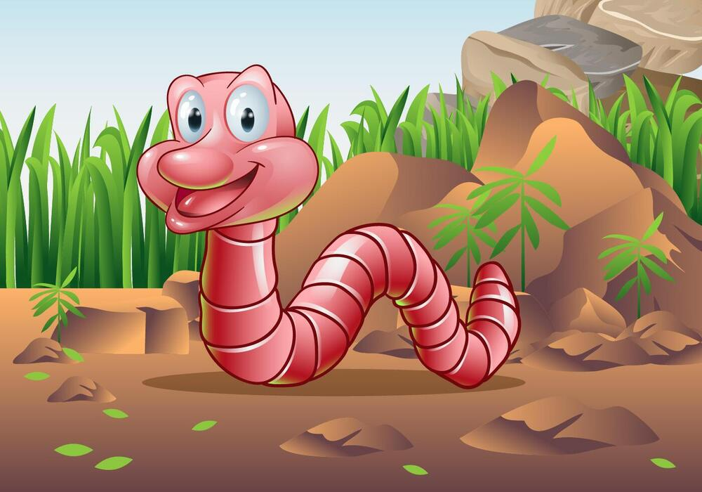
El humus de lombriz que es la caca de la lombriz, es una “maquina para producir”, pues, excreta un 60% del alimento que consume. Su riqueza mineral se expresa en el contenido nutricional, contiene cuatro veces más nitrógeno, veinticinco veces más fósforo, y dos veces y media más potasio, en comparación con la materia orgánica ingerida.
La lombriz roja californiana es el único animal en el mundo que no padece, ni trasmite ninguna enfermedad, lo cual asegura la inocuidad del humus de lombriz para la salud humana y de los animales domésticos.

Otra característica valiosa de la lombriz es su alta prolificidad, una población de lombrices se duplica cada 45 días, es casi un crecimiento de tipo exponencial; además, se considera altamente productiva, por los subproductos que genera, el humus de lombriz, el lixiviado del humus de lombriz y la venta del pie de cría.
La explotación de un lombricultivo a partir de la elaboración previa de compost es un proceso que se valora en razón de la experiencia, concordante con la disponibilidad de recursos y de tiempo para su atención.
En el siguiente módulo se detallará la explotación del vermicultivo en diversas metodologías, propuesta que se puede ampliar en su tamaño a medida que avanza en la elaboración del compost.
Para terminar este capítulo, revisa tus conocimientos jugando a ¿QUIEN QUIERE SER MILLONARIO ?
Evaluación
Referencias bibliográficas
1. Alcaldía Mayor de Bogotá. (2014). Guía técnica para el aprovechamiento de residuos orgánicos a través de metodologías de compostaje y lombricultura. Universidad Nacional de Colombia. Colombia (https://www.uaesp.gov.co/)
2. Centro de Investigación y Desarrollo Tecnológico del Agua. Ciencias de la tierra y del medio ambiente. Libro electrónico. Universidad de Salamanca (España), https://cidta.usal.es/.
3. Diario La República. (2015). En Colombia la lombricultura es un negocio aún reducido y que está aún por desarrollarse. AGRONEGOCIOS. Bogotá (https://www.agronegocios.co/).
4. Escobar Carvajal, A. (2013). Usos potenciales del humus (abono orgánico lixiviado y sólido) en la empresa FERTILOMBRIZ. Trabajo de práctica empresarial. Corporación Universitaria La Sallista. Caldas-Antioquia (Escobar).
5. Red Educativa DESCARTES (2022). Compostaje y Lombricultivo. Institución Universitaria Pascual Bravo. Medellín- Colombia
6. Rodríguez, E.; Trujillo, Y.A. (2016). Manual de aprovechamiento de residuos para la producción de abono orgánico, a partir de la descomposición por lombriz roja californiana (Eisenia Foetida). Universidad Nacional Abierta y a Distancia - UNAD -. Colombia (https://repository.unad.edu.co/)
7. Rodriguez Rojas Sebastián. Fórmula de compostaje.Proyecto de apropiación social del conocimiento para la gestión ambiental comunitaria. Institución Universitaria Pascual Bravo. 2026.
8. Vélez, J. (2021). La agricultura orgánica sólo tiene 1% de hectáreas del total del mercado de alimentos. AGRONEGOCIOS. Bogotá (https://www.agronegocios.co/).
Créditos imagenes
Portada: https://www.klipartz.com/es/sticker-png-deaxx.
Portada capítulo 1: Compost photo created by freepik - www.freepik.com (https://wordpress.org/openverse/image/f7325f38-1529-4a1f-b62c-e7c05c46435a).
Página 11: https://www.klipartz.com/es/sticker-png-gwrrj.
Página 13: Compost photo created by freepik - www.freepik.com.
Página 15: https://www.klipartz.com/es/sticker-png-txsrk.
Páginas 14 y 15: https://www.klipartz.com/es/sticker-png-tqlyz.
Página 17: Photo by RODNAE Productions from Pexels.
Página 19: https://www.klipartz.com/es/sticker-png-ypkob.
Página 22: Caterpillar vector created by brgfx - www.freepik.com.
Página 26: https://docplayer.es/.
Página 29: https://www.klipartz.com/es/sticker-png-tuako.
Página 31: https://www.klipartz.com/es/sticker-png-rijyr.
Página 32: https://www.klipartz.com/es/sticker-png-tzfxi.
Página 33: https://pixabay.com/es/photos/abono-jard%c3%adn-residuos-bio-419261/.
Página 35: https://pixabay.com/es/photos/abono-jard%c3%adn-residuos-bio-419259/.